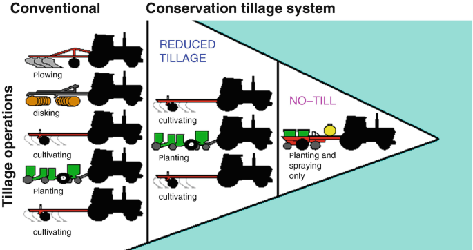
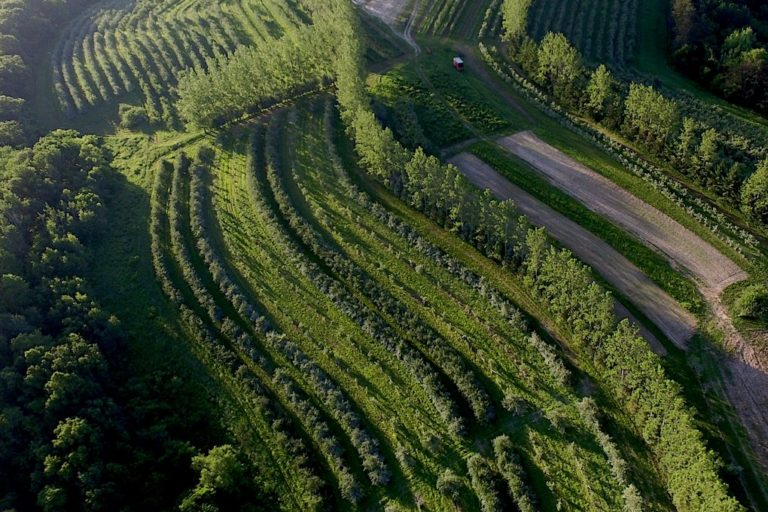
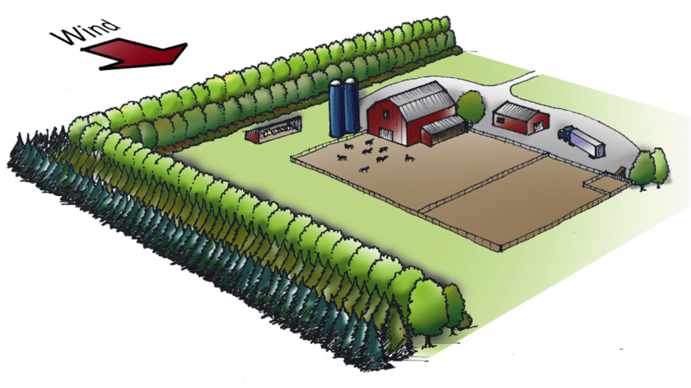
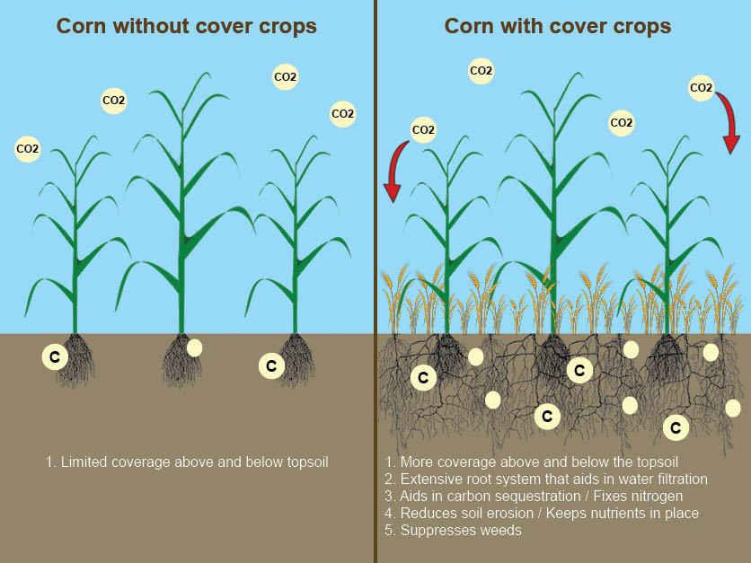
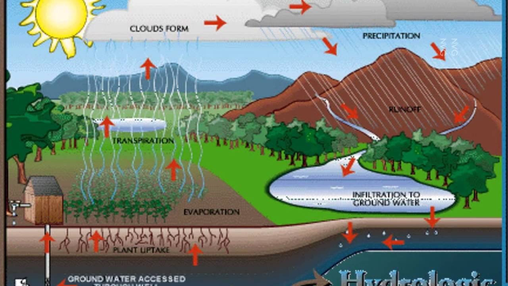

Land Prevention Techniques
Reducing the use of chemical fertilizers and pesticides can help in preventing land pollution. In addition to contaminating the soil, they also do no good to the crops. Therefore, farmers must use natural ingredients instead of these harmful toxins.
Conservation Tillage
This is a technique that involves leaving crop residues on the soil surface to protect it from erosion. It can also involve using minimum tillage or no-till techniques to reduce soil disturbance.
Afforestation
The government has launched several afforestation programs such as the National Afforestation Program and the Green India Mission to promote tree planting and forest conservation. Afforestation helps to prevent soil erosion by reducing runoff and providing a protective cover for the soil.
Agroforesty
This is a land use management system that combines trees and crops on the same land to improve soil health, water conservation, and biodiversity.
Wild Breaks
Windbreaks are rows of trees or shrubs planted along the edges of fields to reduce wind erosion.
Cover Crops
Cover crops are grown between main crops to protect the soil from erosion and improve soil fertility.
Watershed Development
The Government of India has implemented a national Watershed Development Program to improve soil and water conservation. This program aims to promote the adoption of conservation techniques such as contour trenching, vegetative barriers, and check dams.
Terracing

Terracing involves building small walls or steps on hillsides to slow down the flow of water and reduce erosion.